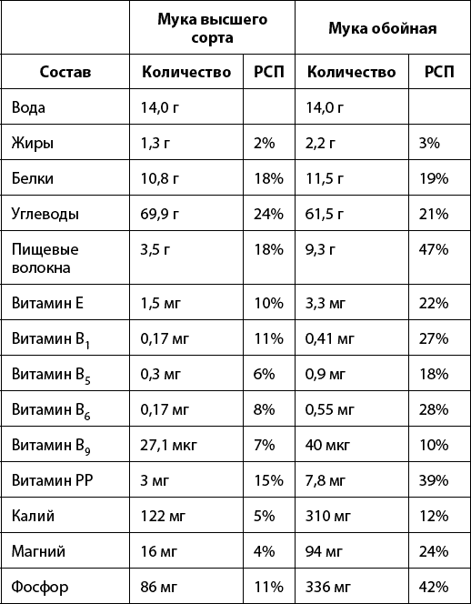
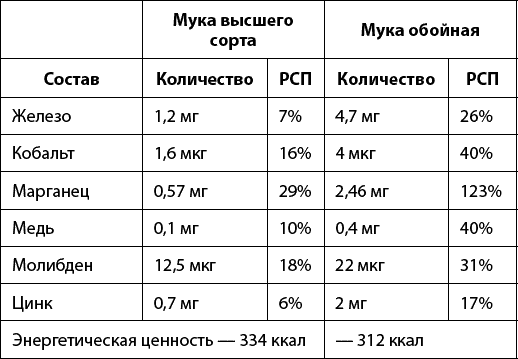

Существует несколько видов муки – они зависят от степени очистки зерна.
ВЫСШИЙ СОРТ. Принято считать, что лучшая мука – это мука с маркировкой «Высший сорт». Но это палка о двух концах. Конечно, именно из муки высшего сорта выпечка получается лучше всего. Но так как мука высшего сорта полностью очищена от зерновых оболочек, то в ней остается очень мало клетчатки, калия, магния, витаминов группы В. То есть для здоровья такая мука малополезна.
ПЕРВЫЙ СОРТ – эта мука более полезная, так как очищается меньше. В ней остается много кальция, фосфора и магния. Из нее лучше всего готовить пироги – они будут вкусными и дольше останутся свежими. А вот торты и булочки из муки первого сорта будут не очень вкусными и пышными.
ВТОРОЙ СОРТ – мука перемолота вместе с оболочками зерна. Поэтому все витамины и минералы в ней присутствуют целиком! Но тесто из нее получается не слишком пышным, подходит медленно, а изделия быстро черствеют. Из такой муки хорошо печь блины и блинчики, вафли, а также готовить пельмени и вареники.
ОБОЙНАЯ МУКА – мука делается из нешлифованного зерна, с которого оббита шелуха. Это самая полезная мука! Благодаря тому что в этой муке полностью сохранен зародышевый слой и оболочки, эта мука содержит максимальную концентрацию витаминов. Из такой муки не получится пышных бисквитов, но ею можно заменять часть муки высшего сорта в рецептах. Из обойной муки можно готовить блины, лепешки, печенье.
Чтобы выбрать качественную муку, существует немало секретов. Например, качество муки можно определить на ощупь! Чтобы проверить качество муки, нужно потереть ее между пальцами. Качественная мука должна равномерно рассыпаться. Если же мука слипается в руках, образует комочки, значит, она хранилась в помещениях с высокой влажностью. Такая мука потеряла свои хлебопекарные свойства. Тесто из нее получится тяжелым, а выпечка будет непропеченной.
Прежде чем купить муку, обратите внимание на дату помола. Мука, которую смололи меньше месяца назад, для выпечки не подходит. По технологии она должна «дозреть». Иначе выпечка окажется не очень вкусной. И тесто будет плохим. Поэтому покупайте ту муку, у которой со дня помола прошло больше месяца. Но если прошло больше трех месяцев, обязательно просеивайте ее через сито. Иначе тесто получится не клейким.
Цвет качественной муки – белый с кремовым оттенком. Если же цвет муки потемневший, значит, она неправильно хранилась. Если оттенок красноватый, значит, в муку добавили отруби. Об этом обязательно должно быть написано на упаковке. Если оттенок муки голубоватый, значит, ее сделали из недозревших зерен. Лучше такую муку не покупать, так как тесто и выпечка получатся горьковатыми.
Если хотите дополнительно проверить свежесть муки, смешайте чайную ложку муки и чайную ложку воды. Если мука не поменяла цвет, значит, она свежая. Если мука потемнела, значит, мука некачественная и выпечка получится плоской и пресной.
Мифы
? Обойную муку нельзя применять при атеросклерозе.
Обойная мука содержит практически в 3 раза больше пищевых волокон, чем мука высшего сорта. А пищевые волокна помогают выводить холестерин из организма. Значит, наоборот, при атеросклерозе стоит отдать предпочтение обойной муке.
Правда
? Обойная мука переваривается медленнее, чем мука высшего сорта.
А значит, расщепление углеводов будет происходить медленнее, и они меньше будут откладываться в жиры.
? В выпечке мука сохраняет больше полезных свойств, чем в отварных изделиях.
При отваривании большая часть полезных веществ из муки вываривается в воду.
? Обойная мука полезна для кожи.
Обойная мука содержит 22 % РСП витамина Е, который является антиоксидантом и улучшает состояние кожи.
Как только не используют муку: лепят пельмени, пекут торты… У каждой хозяйки есть как минимум сотня рецептов использования этого продукта. А еще из муки можно приготовить вкусный кекс. И он будет намного полезнее магазинного!
Например, в 100 г покупного кекса может быть до 436 ккал! Это половина суточной нормы калорий для женщин. А в самодельном кексе – всего 230 ккал. Поэтому такой кекс можно есть даже тем, кто сидит на строгой диете. Перебарщивать, конечно, не стоит, но иногда можно себя побаловать.
В миску просеять муку, насыпать сахар, корицу и соду. Бананы размять вилкой или прокрутить в блендере, ананас нарезать на мелкие кусочки. Добавить в тесто орехи, пюре из бананов и кусочки ананаса. Аккуратно все перемешать. Форму для кекса смазать маслом, выложить тесто и поставить запекаться при температуре 180 °C примерно на 25–30 минут.
В это время нужно сделать глазурь. Сливочное масло растопить в сковороде, высыпать сахарную пудру, цедру апельсина, мелко нарезанный стручок ванили, сливочный сыр и перемешать.
Готовый кекс остудить и покрыть сверху глазурью – готово!
Такой кекс будет полезен для профилактики атеросклероза и улучшит работу мозга.